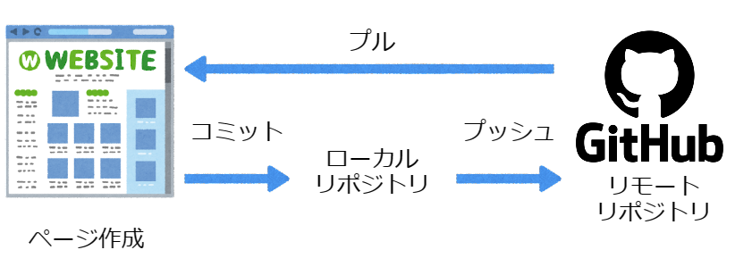
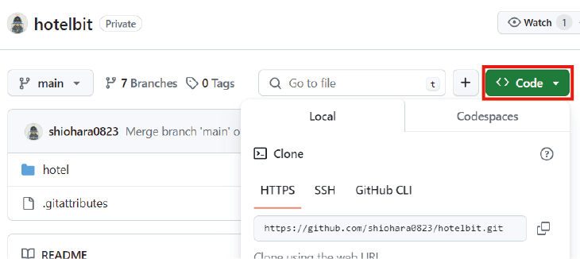
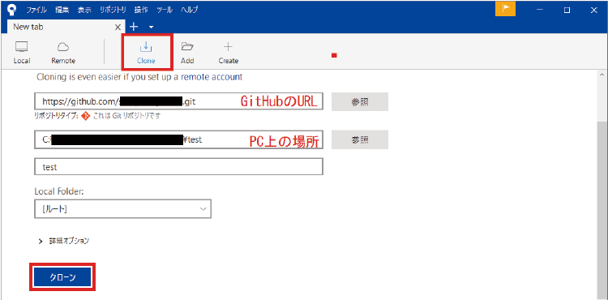

Sourcetree と GitHub
■必要ツールのインストール
●Sourcetree のインストール
https://mteam.jp/column/10210/#Git
上記ページを見てインストールと会員登録をする（Gmail を作って登録）
●GitHub に登録、インストール
https://github.co.jp/
会員登録をする（Gmail を作って登録）
●GitHub Desktop をインストール
https://docs.github.com/ja/desktop/installing-and-authenticating-to-github-desktop/installing-github-desktop
●Gitインストール
https://gitforwindows.org/
■SourcetreeとGitHubの作業イメージ

■Sourcetreeを使ってリモートリポジトリのクローンを作成
GitHub の [ <> Code ▼ ] をクリック、HTTPS のアドレスをコピーする。
Sourcetree の [ Clone ] をクリックし、 上の枠に GitHub でコピーしたアドレスを貼り、
下の枠の参照で自分の PC のフォルダを指定
（今回は C:\xampp\htdocs\ に新規にフォルダを作成してそれを選ぶ）
[ クローン ] を押してクローンを自分の PC に作成する


<<前へ
>>次へ